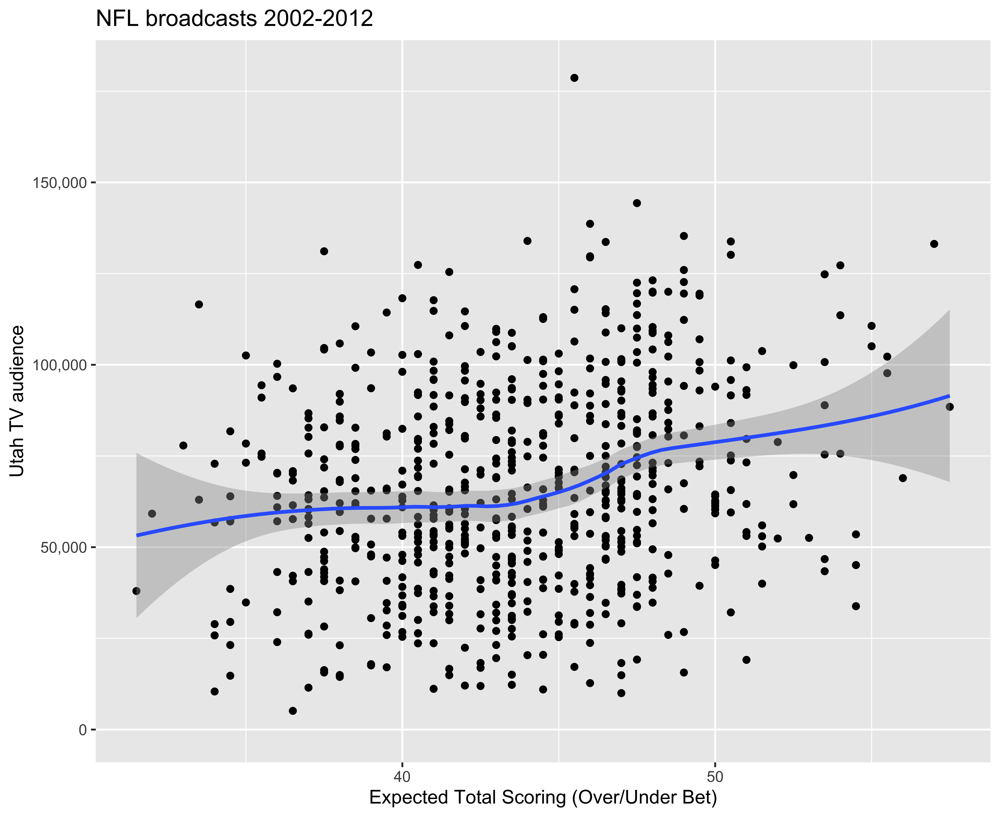
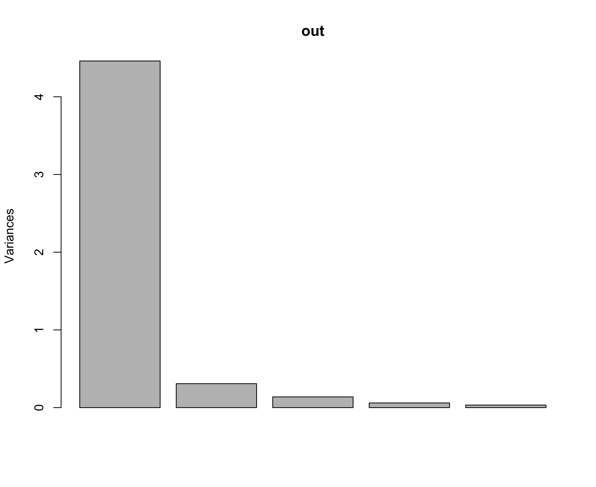

Loops to Assemble Datasets
BYU STAT 250
Announcements
Recap of last lecture
Functions
Structure
Difference between ifelse and if
Repeating code chunks for for loops
Outline
Using for loop to assemble component datasets
bind_rows to stack rows
join to add columns
NFL in UT
Goal: Advise FOX13 in week-to-week selection from slate of FOX broadcasts

Utah is the #29 TV market and 8th largest without an NFL team
NFL on FOX (primarily NFC)
America’s Game of the Week (6 weeks, often include Eagles & Cowboys)
One game will get the FOX lead broadcast team (2023: Kevin Burkhardt, Greg Olsen, Erin Andrews, Tom Rinaldi) and the assumption is that Utah would get that game
NFL in UT
Data: 2002-2012

NFL in UT
# A tibble: 11 × 8
date time network `home team`
<dttm> <dttm> <chr> <chr>
1 2003-01-04 00:00:00 1899-12-31 14:45:00 ABC New York Jets
2 2003-01-04 00:00:00 1899-12-31 18:00:00 ABC Green Bay Packers
3 2003-01-05 00:00:00 1899-12-31 14:45:00 FOX San Francisco 49ers
4 2003-01-05 00:00:00 1899-12-31 11:00:00 CBS Pittsburgh Steelers
5 2003-01-11 00:00:00 1899-12-31 18:15:00 FOX Philadelphia Eagles
6 2003-01-11 00:00:00 1899-12-31 14:30:00 CBS Tennessee Titans
7 2003-01-12 00:00:00 1899-12-31 11:00:00 FOX Tampa Bay Buccanee…
8 2003-01-12 00:00:00 1899-12-31 14:45:00 CBS Oakland Raiders
9 2003-01-19 00:00:00 1899-12-31 13:15:00 FOX Philadelphia Eagles
10 2003-01-19 00:00:00 1899-12-31 16:45:00 CBS Oakland Raiders
11 2003-01-26 00:00:00 1899-12-31 16:30:00 ABC Tampa Bay Buccanee…
# ℹ 4 more variables: `visiting team` <chr>, Audience <dbl>,
# line <lgl>, ou <lgl>What went wrong? Should have a thousand observations!
Only read first Sheet !
NFL in UT
Loop over each sheet

NFL in UT
Get the 2006 Sheet
# A tibble: 120 × 8
date time network `home team`
<dttm> <dttm> <chr> <chr>
1 2006-08-06 00:00:00 1899-12-31 18:00:00 NBC Philadelphia Eagles
2 2006-08-10 00:00:00 1899-12-31 18:00:00 FOX St. Louis Rams
3 2006-08-11 00:00:00 1899-12-31 18:00:00 CBS Atlanta Falcons
4 2006-08-13 00:00:00 1899-12-31 18:00:00 NBC Cincinnati Bengals
5 2006-08-14 00:00:00 1899-12-31 18:00:00 ESPN Minnesota Vikings
# ℹ 115 more rows
# ℹ 4 more variables: `visiting team` <chr>, Audience <dbl>,
# line <dbl>, ou <dbl>Notice there is no season column (it’s inferred from the Sheet Name)
Note: Also need to combine date and time into a single column
NFL in UT
Get the 2006 Sheet
# A tibble: 120 × 8
season date network `home team` `visiting team`
<dbl> <dttm> <chr> <chr> <chr>
1 2006 2006-08-06 18:00:00 NBC Philadelphia Eag… Oakland Raiders
2 2006 2006-08-10 18:00:00 FOX St. Louis Rams Indianapolis C…
3 2006 2006-08-11 18:00:00 CBS Atlanta Falcons New England Pa…
4 2006 2006-08-13 18:00:00 NBC Cincinnati Benga… Washington Red…
5 2006 2006-08-14 18:00:00 ESPN Minnesota Vikings Oakland Raiders
# ℹ 115 more rows
# ℹ 3 more variables: Audience <dbl>, line <dbl>, ou <dbl>Loop over All Sheets
Now that we have the code for any sheet we just need to write a for loop over Sheet Names
How do we know the Sheet Names?
[1] "2002" "2003" "2004" "2005" "2006" "2007" "2008" "2009" "2010"
[10] "2011" "2012"Notice the " (character data, not numeric data)
Loop over All Sheets
Psuedo Code to create NFLinUT
Once we have NFLinUT this will work, but what is NFLinUT the first time through the for loop?
Loop over All Sheets to create NFLinUT
library(tidyverse)
library(readxl)
# initialize NFLinUT to be a thing, but empty
NFLinUT <- NULL
# get Sheet Names
sheet_names <- excel_sheets("NFLinUT.xlsx")
# loop over Sheets
for(i in sheet_names){
# ith Sheet
this_sheet <- read_excel("NFLinUT.xlsx", sheet = i)
# address some data issues
this_sheet <- this_sheet |>
mutate(season = parse_number(i)) |>
mutate(date = make_datetime(year = year(date), month = month(date), day = day(date),
hour = hour(time), min = minute(time))) |>
select(!time) |>
select(season, date, everything())
# add this sheet to the bottom of NFLinUT
NFLinUT <- bind_rows(NFLinUT, this_sheet)
}
# create csv file for future work
write_csv(NFLinUT, "NFLinUT.csv")# A tibble: 1,249 × 8
season date network `home team` `visiting team`
<dbl> <dttm> <chr> <chr> <chr>
1 2002 2003-01-04 14:45:00 ABC New York Jets Indianapolis C…
2 2002 2003-01-04 18:00:00 ABC Green Bay Packe… Atlanta Falcons
3 2002 2003-01-05 14:45:00 FOX San Francisco 4… New York Giants
4 2002 2003-01-05 11:00:00 CBS Pittsburgh Stee… Cleveland Brow…
5 2002 2003-01-11 18:15:00 FOX Philadelphia Ea… Atlanta Falcons
6 2002 2003-01-11 14:30:00 CBS Tennessee Titans Pittsburgh Ste…
7 2002 2003-01-12 11:00:00 FOX Tampa Bay Bucca… San Francisco …
8 2002 2003-01-12 14:45:00 CBS Oakland Raiders New York Jets
9 2002 2003-01-19 13:15:00 FOX Philadelphia Ea… Tampa Bay Bucc…
10 2002 2003-01-19 16:45:00 CBS Oakland Raiders Tennessee Tita…
11 2002 2003-01-26 16:30:00 ABC Tampa Bay Bucca… Oakland Raiders
12 2003 2003-08-02 18:00:00 ESPN Tampa Bay Bucca… New York Jets
13 2003 2003-08-07 18:00:00 ESPN New England Pat… New York Giants
14 2003 2003-08-11 18:00:00 ESPN New Orleans Sai… Philadelphia E…
15 2003 2003-08-14 18:15:00 FOX San Francisco 4… Oakland Raiders
16 2003 2003-08-15 18:00:00 CBS Cleveland Browns Green Bay Pack…
17 2003 2003-08-16 18:00:00 ESPN Tennessee Titans Buffalo Bills
18 2003 2003-08-17 18:00:00 ABC St. Louis Rams Tampa Bay Bucc…
19 2003 2003-08-21 18:00:00 FOX Pittsburgh Stee… Dallas Cowboys
20 2003 2003-08-22 18:00:00 CBS Miami Dolphins Atlanta Falcons
# ℹ 1,229 more rows
# ℹ 3 more variables: Audience <dbl>, line <dbl>, ou <dbl>NFL in Utah

NFL in Utah

Food Prices
Each food item has their own economy / market
- Bananas are different from Potato Chips
Grocery basket is the market
- All prices move up / down together
Food Prices

Food Prices
Chicken Drumsticks
https://fred.stlouisfed.org/series/APU0000706212
Tomatoes
https://fred.stlouisfed.org/series/APU0000712311
Bananas
https://fred.stlouisfed.org/series/APU0000711211
Ice Cream
https://fred.stlouisfed.org/series/APU0000710411
Potato Chips
Food Prices

Food Prices
URL / Links to FRED Data Downloads
Chicken Drumsticks
https://fred.stlouisfed.org/graph/fredgraph.csv?id=APU0000706212
Tomatoes
https://fred.stlouisfed.org/graph/fredgraph.csv?id=APU0000712311
Bananas
https://fred.stlouisfed.org/graph/fredgraph.csv?id=APU0000711211
Ice Cream
https://fred.stlouisfed.org/graph/fredgraph.csv?id=APU0000710411
Potato Chips
https://fred.stlouisfed.org/graph/fredgraph.csv?id=APU0000718311
Need to Loop over all URLs
Food Prices
fred_id <- c("APU0000706212", "APU0000712311", "APU0000711211",
"APU0000710411", "APU0000718311")
paste0("https://fred.stlouisfed.org/graph/fredgraph.csv?id=",
fred_id)[1] "https://fred.stlouisfed.org/graph/fredgraph.csv?id=APU0000706212"
[2] "https://fred.stlouisfed.org/graph/fredgraph.csv?id=APU0000712311"
[3] "https://fred.stlouisfed.org/graph/fredgraph.csv?id=APU0000711211"
[4] "https://fred.stlouisfed.org/graph/fredgraph.csv?id=APU0000710411"
[5] "https://fred.stlouisfed.org/graph/fredgraph.csv?id=APU0000718311"Food Prices
Psuedo Code to create prices
What does this do the first time in the loop?
Loop over All URLs to create prices
library(tidyverse)
# provide the `id` and name of each food
fred_id <- c("APU0000706212", "APU0000712311", "APU0000711211",
"APU0000710411", "APU0000718311")
fred_food <- c("chicken", "tomato", "banana", "icecream", "chips")
# loop over foods
for(i in 1 : 5){
# ith dataset
thisfoodcsv <- paste0("https://fred.stlouisfed.org/graph/fredgraph.csv?id=",
fred_id[i])
thisfood <- read_csv(thisfoodcsv, na = ".")
names(thisfood)[2] <- fred_food[i]
# for the first dataset
if(i == 1){
prices <- thisfood
}
# use join for all other datasets
else{
prices <- prices |>
full_join(thisfood, by = "DATE")
}
}
# create csv file for future work
write_csv(prices, "FoodPrices.csv")# A tibble: 523 × 6
DATE chicken tomato banana icecream chips
<date> <dbl> <dbl> <dbl> <dbl> <dbl>
1 1980-01-01 1.06 0.703 0.319 1.76 1.98
2 1980-02-01 1.02 0.586 0.345 1.78 1.99
3 1980-03-01 0.985 0.642 0.355 1.72 2.00
4 1980-04-01 0.967 0.634 0.353 1.77 2.01
5 1980-05-01 0.985 0.737 0.357 1.82 2.01
6 1980-06-01 1.00 0.745 0.348 1.83 2.02
7 1980-07-01 1.07 0.683 0.332 1.83 2.01
8 1980-08-01 1.13 0.646 0.335 1.87 2.05
9 1980-09-01 1.16 0.679 0.335 1.82 2.04
10 1980-10-01 1.14 0.764 0.335 1.88 2.07
11 1980-11-01 1.13 0.603 0.339 1.88 2.14
12 1980-12-01 1.14 0.662 0.349 1.92 2.18
13 1981-01-01 1.15 0.792 0.343 1.94 2.20
14 1981-02-01 1.15 1.02 0.366 2.02 2.19
15 1981-03-01 1.13 1.17 0.377 1.99 2.23
16 1981-04-01 1.05 1.20 0.377 2.02 2.28
17 1981-05-01 1.10 0.607 0.379 2.01 2.27
18 1981-06-01 1.10 0.639 0.369 2.01 2.30
19 1981-07-01 1.16 0.614 0.341 2.02 2.26
20 1981-08-01 1.14 0.659 0.351 2.01 2.29
# ℹ 503 more rowsFood Prices
Lecture Review
Using for loop to assemble component datasets
bind_rows to stack rows
join to add columns
Appendix:
Full Analysis of NFL in UT
Full Analysis of Food Prices
NFL in Utah
Import
# A tibble: 11 × 8
season date network `home team` `visiting team`
<dbl> <dttm> <chr> <chr> <chr>
1 2008 2008-12-14 11:00:00 FOX Atlanta Falcons Tampa Bay Bucc…
2 2003 2004-01-11 14:45:00 FOX Philadelphia Ea… Green Bay Pack…
3 2005 2005-10-17 19:00:00 ABC Indianapolis Co… St. Louis Rams
4 2004 2004-10-03 14:15:00 CBS Tampa Bay Bucca… Denver Broncos
5 2003 2003-11-27 14:15:00 CBS Dallas Cowboys Miami Dolphins
6 2010 2010-10-10 14:15:00 CBS Dallas Cowboys Tennessee Tita…
7 2012 2012-12-10 18:30:00 ESPN New England Pat… Houston Texans
8 2010 2010-09-20 18:30:00 ESPN San Francisco 4… New Orleans Sa…
9 2009 2010-02-07 16:30:00 CBS New Orleans Sai… Indianapolis C…
10 2006 2006-10-01 18:00:00 NBC Chicago Bears Seattle Seahaw…
11 2006 2006-10-01 11:00:00 FOX Kansas City Chi… San Francisco …
# ℹ 3 more variables: Audience <dbl>, line <dbl>, ou <dbl>NFL in Utah
Visualize
NFL in Utah
Visualize
NFL in Utah
Model


NFL in Utah
Communicate

NFL in Utah
Communicate


Food Prices
Import
# A tibble: 11 × 6
DATE chicken tomato banana icecream chips
<date> <dbl> <dbl> <dbl> <dbl> <dbl>
1 1993-03-01 1.10 0.88 0.475 2.56 2.84
2 1989-10-01 1.21 0.836 0.432 2.64 2.82
3 2009-11-01 1.47 1.73 0.561 4.43 4.53
4 2000-07-01 1.29 1.28 0.512 3.46 3.31
5 1981-07-01 1.16 0.614 0.341 2.02 2.26
6 2017-02-01 1.48 1.93 0.573 4.87 4.33
7 2001-12-01 1.34 1.40 0.505 3.84 3.48
8 2015-11-01 1.60 1.98 0.575 4.68 4.49
9 2005-04-01 1.32 1.71 0.503 3.77 3.46
10 1992-09-01 1.12 0.765 0.459 2.58 2.86
11 2007-08-01 1.30 1.48 0.506 3.90 3.61Food Prices
Visualize
Food Prices
Modeling
Unsupervised Learning
Principal Components Analysis
- If you’re a whale shark approaching a krill swarm, to get as many krill as possible in the fewest number of passes, you’re going to want to rotate your face (@allison_horst)


- Notice the krill on the rotated shark axes have most variation horizontally (and a little vertically)
Food Prices
Modeling
Unsupervised Learning
Principal Components Analysis
Imagine the 5 food prices in 5 dimensions
Rotate those dimensions in order of capturing the most variation
Reduce the number of dimensions (number of principal components)
Each dimension is a linear combination of the original columns, and the largest weights help us interpret the principal components
Food Prices
Modeling
Food Prices
Modeling
How many principal components?
Food Prices
Modeling
PC1 PC2 PC3 PC4 PC5
chicken 0.4469627 0.45216665 0.37431055 -0.6495729 -0.18362004
tomato 0.4157432 -0.83337664 0.30569765 -0.1532971 0.12525932
banana 0.4474017 -0.05814465 -0.86399450 -0.2209798 -0.03365077
icecream 0.4643948 0.06394906 0.10622617 0.6047697 -0.63499414
chips 0.4599469 0.30587320 0.09311314 0.3741344 0.73908312Food Prices
Communication
PC1 is interpreted as they all go up or down together (CPI)
PC2 is interpreted as a contrast between (chicken & chips) compared to tomato meaning when tomato goes up (down) then chicken & chips go down (up)